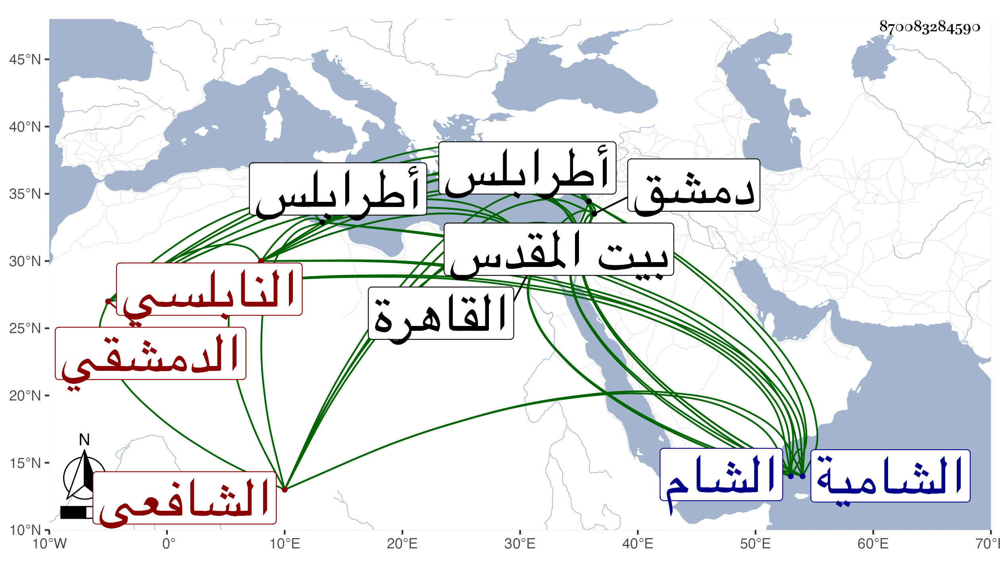

0902Sakhawi.DawLamic.ITO20230111-ara1.EIS1600.870083284590
Biography ID: 870083284590
42
أبو بكر بن أحمد بن إبرهيم بن محمد بن محمد بن محمد بن عمر الزين النابلسي الأصل الدمشقي الشافعي الماضي أبوه وجده نزيل القاهرة وصاحب النجم يحيى بن حجي ويعرف كسلفه بابن فلاح بالتخفيف . ممن نشأ بدمشق وحفظ القرآن وغيره وحضر بها بعض الدروس وقطن القاهرة في بيت ابن البارزي لاختصاص أبيه بالكمال ولازم الانتماء للنجم المشار إليه ووافقه في الأخذ عن جل شيوخه كالعلم البلقيني والمناوي والمحلى والشرواني والشمني وكذا أخذ عن ابن حسان ولا أستبعد أن يكون أخذ بدمشق عن البدر بن قاضي شهبة والزين خطاب وغيرهما نعم أخذ عن النجم بن قاضي عجلون ثم عن أخيه التقي وسمع في البخاري بالظاهرية بل سمع مني قليلا وسألني عن أشياء وتميز وشارك في الفضيلة وكتب بخطه أشياء وأظن كان كتابه الحاوي فقد فقد كانت له عناية بشرحه للقونوي وحج غير مرة وزار بيت المقدس وتكرر دخوله البلاد الشامية لقبض جهات صاحبه وأخته وبني عبد الرحيم بن البارزي ثم بعده لولده وبقية المشار إليهم وصار لذلك يركب الفرس ويتبعه الجنيب مع خير وعقل ولطف وحسن عشرة وخفة روح وتواضع وتنزه وعدم حصر وتناقص حاله بأخرة بحيث قطن الشام وتزوج بها وجلس شاهدا بباب الجابية بل بباب قاضيه الشهاب بن الفرفور ولم يحصل من ذلك على طائل وصار يبيع كتبه أولا فأولا وهش ثم بدا له التوجه لطرابلس ليخبر أمره في استيطانها فأم باينال نائبها ولم يلبث أن مات بها في سنة ثمان وتسعين فيما بلغني وأنه لم يقصر على السبعين رحمه الله وإيانا .
